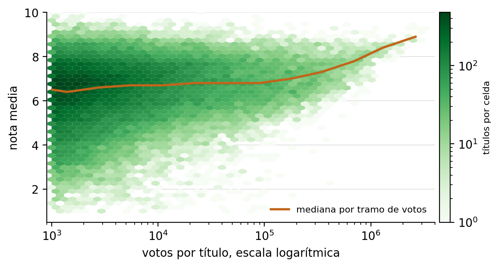
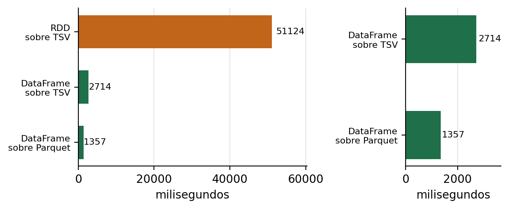

IMDb ofrece 12,9 millones de títulos y 1,7 millones de calificaciones sin clave ni registro. El filtro de mil votos deja 71.355 títulos de 9 tipos en 16 décadas.
| Criterio | RDD | DataFrame | Dataset |
|---|---|---|---|
| Nivel | Colección de objetos | Tabla con esquema | Tabla tipada |
| Tipado | Dinámico | En ejecución | Estático en JVM |
| Optimización | Ninguna | Catalyst y Tungsten | Catalyst y codificadores |
| Serialización | Java o Kryo | Binaria de Tungsten | Binaria guiada |
| En Python | Sí | Sí | No |
| Medición | 51.124 ms | 2.714 ms / 1.357 ms | No aplica |
Dataset no existe en Python. La API tabular de PySpark es DataFrame, equivalente a un Dataset[Row] sin tipado estático. El error de nombre de columna se descubre en ejecución, no en compilación.
El fragmento se ejecuta en .\install\run.ps1 shell y muestra la única diferencia real, que es el momento en que se descubre un error de tipo.
case class Title(tconst: String, titleType: String, startYear: Int, averageRating: Double)
val titles = spark.read.parquet("data/curated/imdb/titles").as[Title]
titles.filter(t => t.startYear >= 2000 && t.averageRating >= 8.0)
.groupBy("titleType")
.avg("averageRating")
Cuatro transformaciones y cuatro acciones que no aparecen en las listas de clase. La demo lee el TSV curado como texto y encadena las ocho sobre pares clave valor.
| Transformaciones | Acciones |
|---|---|
| mapPartitionsWithIndex | takeOrdered |
| distinct | aggregate |
| partitionBy | countByValue |
| join | foreachPartition |
map y filter se usan solo para parsear y limpiar, no cuentan como las funciones nuevas.
[rdd] leidos 71355 titulos y 1727597 notas [rdd] titles ocupa 8 particiones con [8883, 9014, 8897, 8897, 8884, 8924, 8885, 8971] [rdd] distinct deja 9 tipos de titulo [rdd] partitionBy ocupa 8 particiones con [8918, 9025, 9004, 8923, 8906, 8721, 9039, 8819] [rdd] join empareja 71355 pares en 39.5 s [rdd] takeOrdered devuelve los 10 titulos con mas votos [rdd] The Shawshank Redemption 9.3 3260058 [rdd] The Dark Knight 9.1 3245703 [rdd] Inception 8.8 2885372 [rdd] aggregate calcula la nota media ponderada 7.152 sobre 1503735096 votos [rdd] demo terminada en 121.3 s6
En PySpark, partitionBy no ahorra el intercambio del join posterior. join se traduce en python_join, que une las dos ramas y las agrupa con groupByKey. Ese groupByKey crea un particionador nuevo y descarta el anterior.
La comprobación está en pyspark/join.py, función _do_python_join, no en la intuición.
Cinco funciones de clase y cuatro investigadas. Cada bloque imprime el nombre y su resultado. El plan físico se muestra solo en agg.
| Clase | Investigadas |
|---|---|
| select | Window con row_number |
| filter | pivot |
| groupBy | explode con split |
| agg | regexp_replace |
| orderBy |
corr y percentile_approx se usan como refuerzo, sin reemplazar a las cuatro investigadas.
[dataframe] leidos 71355 titulos con nota [dataframe] filter deja 10342 peliculas desde 1990 con diez mil votos o mas [dataframe] groupBy produce 346 combinaciones de genero y decada [dataframe] agg calcula nota media, votos y titulos por genero [dataframe] orderBy desempata la nota por cantidad de votos [dataframe] Window con row_number deja tres titulos por genero [dataframe] pivot cruza la decada con tres tipos de titulo [dataframe] regexp_replace encuentra 4984 titulos repetidos [dataframe] corr sin filtrar nulos da -0.129 porque Spark los lee como cero [dataframe] corr entre duracion y nota da -0.056 sobre 68047 titulos [dataframe] demo terminada en 15.9 s9

Ordenar por nota exige un mínimo de votos. numVotes se conserva en el esquema para poder hacer esa distinción.

RDD sobre TSV 51.124 ms · DataFrame sobre TSV 2.714 ms · DataFrame sobre Parquet 1.357 ms
El cuadro comparativo, las dos demostraciones y la medición cubren los cinco puntos del enunciado.
La medición añade una fila que no estaba pedida y que resulta ser la más útil, porque obliga a separar dos efectos que suelen presentarse juntos.
Repositorio, código y evidencia en https://github.com/nemryz/spark-lab05